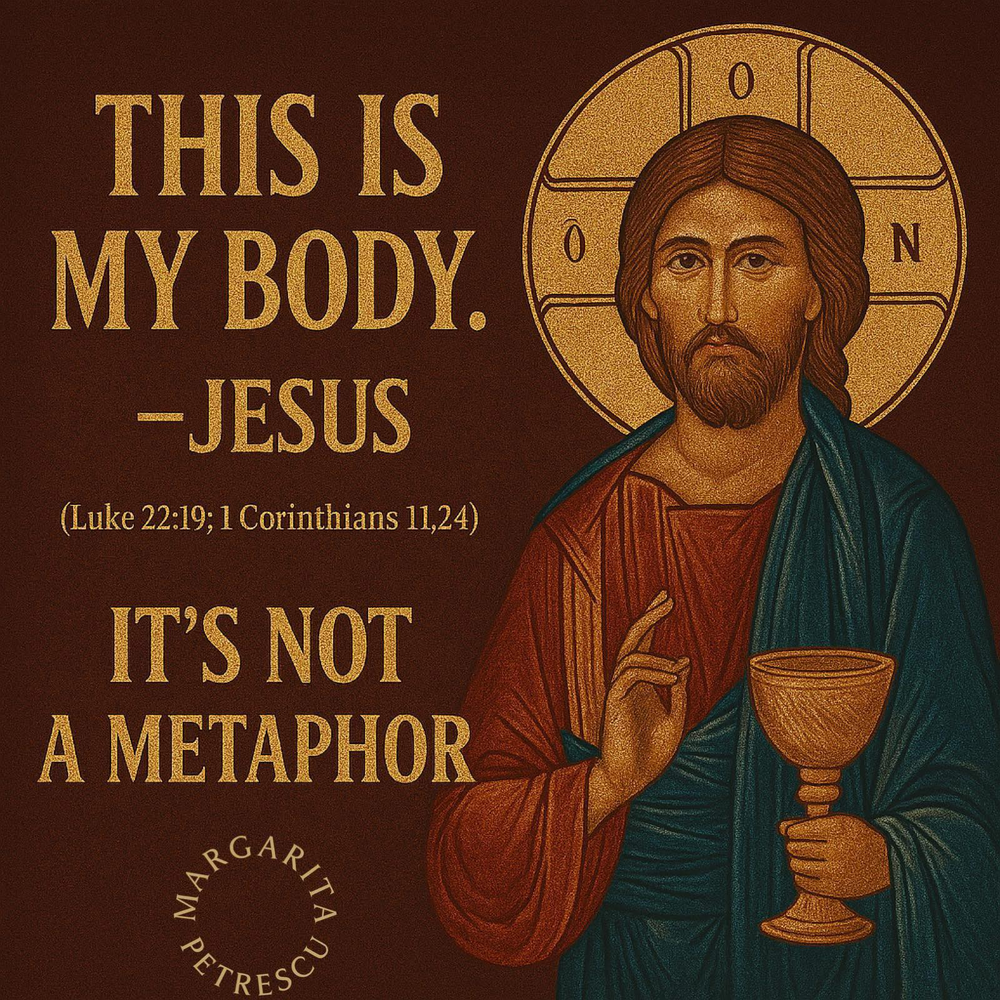

The Word Is 'Estin' — Not 'Represents': The Biblical Case Against Symbolic Communion
Most Protestants today believe that the Holy Eucharist (or Holy Communion) is purely symbolic—that when Jesus said, “This is my body,” He meant it figuratively. However, this interpretation is hard to reconcile with the biblical text itself.
The key word in Jesus’ statement is the word “is”—as in “This is my body.” Why is this word so important?
In the original Greek, the word used is ἐστίν (estin), which is the third person singular present of the verb “to be.” Far from implying symbolism, this word strongly implies identity—that the bread is, in some mysterious but real way, truly His body. The text doesn’t use language that suggests metaphor or symbol, as Greek has clearer ways to express that.
In other words, Jesus didn’t say, “This represents my body” or “This is like my body.” He said, “This is my body,” and the word ἐστίν affirms that real identification, not mere representation.
This aligns with how the early Church universally understood the Eucharist—not as a mere symbol, but as a real participation in the body and blood of Christ, as also reflected in 1 Corinthians 10:16 and the writings of the Church Fathers like Ignatius of Antioch and Irenaeus of Lyons.
The Lord’s Supper:
“Now while they were eating, Jesus took some bread, and [a]after a blessing, He broke it. And giving it to the disciples, He said, 'Take, eat; this ἐστίν My body.' And when He had taken a cup and given thanks, He gave it to them, saying, 'Drink from it, all of you; for this ἐστίν My blood of the covenant, which is poured out for many for forgiveness of sins.'" - Matthew 26:26-28
This doesn’t change when we look in the Greek of Mark 14:22-24, Luke 22:19-20 or John 6:51-58. We see the same word being used “estin”.
The Greek word ἐστίν (transliterated as estin) is a form of the verb εἰμί, which means "to be." Meaning: ἐστίν = "he is," "she is," or "it is" It is the third person singular, present active indicative of εἰμί. Examples: Ὁ Θεός ἐστίν ἀγάπη – God is love. Τοῦτο ἐστίν τὸ σῶμά μου – This is my body. (from the words of Jesus at the Last Supper)
Let’s look at what Christ says in John:
“I am the living bread that came down from heaven; if anyone eats of this bread, he will live forever; and also the bread which I will give for the life of the world is My flesh.” Then the Jews began to argue with one another, saying, “How can this man give us His flesh to eat?” So Jesus said to them, “Truly, truly, I say to you, unless you eat the flesh of the Son of Man and drink His blood, you have no life in yourselves. He who eats My flesh and drinks My blood has eternal life, and I will raise him up on the last day. 55 For My flesh is true food, and My blood is true drink. He who eats My flesh and drinks My blood abides in Me, and I in him. As the living Father sent Me, and I live because of the Father, so he who eats Me, he also will live because of Me. This is the bread which came down out of heaven, not as the fathers ate and died. He who eats this bread will live forever.”- John 6:51-58
Now remember while we look deeper into John 6:51-58 the words of St. Paul:
“May it never be! Rather, let God be true and every man a liar, as it is written, THAT YOU MAY BE JUSTIFIED IN YOUR WORDS, AND OVERCOME WHEN YOU [a]ARE JUDGED.” -Romans 3:4
In John 6:52, we see the Jews respond with confusion and even offense:
“How can this man give us His flesh to eat?”Now, if Jesus were speaking metaphorically, this would have been the perfect time for Him to clarify—something like, “Calm down, I’m only speaking symbolically!” But He doesn’t. In fact, He does the exact opposite.
Instead of softening His words, Jesus intensifies them. In John 6:53, He says:
“Truly, truly, I say to you, unless you eat the flesh of the Son of Man and drink His blood, you have no life in yourselves.”
Not only does He reaffirm what He just said, but He doubles down using even stronger language in the verses that follow—including the Greek word “ἐστίν” (estin) again, meaning “is”—indicating real identity, not mere symbolism.
Jesus didn't backpedal. He meant what He said. And the early Church understood it this way—not as metaphor, but as a mysterious and sacred reality: that the Eucharist truly is His body and blood.
Now let’s look further into the words of St. Paul:
“Therefore whoever eats the bread or drinks the cup of the Lord in an unworthy manner, shall be guilty of the body and the blood of the Lord. But a man must test himself, and in so doing he is to eat of the bread and drink of the cup. For he who eats and drinks, eats and drinks judgment to himself if he does not judge the body rightly. For this reason many among you are weak and sick, and a number [a]sleep. But if we judged ourselves rightly, we would not be judge. But when we are judged, we are disciplined by the Lord so that we will not be condemned along with the world.”–1 Corinthians 11:27-32
The cross—the very instrument of suffering upon which our beloved Savior died—is now rightly honored as a sacred symbol of our faith. But if the Holy Eucharist were merely symbolic, then why does Scripture call us to treat it with such reverence and caution?
In 1 Corinthians 11, the Apostle Paul rebukes the Church in Corinth because many were getting sick and even dying for taking the Lord’s Supper in an unworthy manner. These were not random consequences—Paul says it was because they were not discerning the body of the Lord. They approached the Eucharist without repentance, without self-examination, and without a heart worthy of the true flesh and blood of Jesus Christ.
This isn’t the language of metaphor. This is the language of mystery and reality.
And finally—if we’re still unsure—let’s turn to the men who sat at the feet of the apostles: the early Church Fathers. Surely if anyone would understand what Jesus and the apostles truly meant, it would be those who learned directly from them or their disciples. Their consistent witness across the early centuries affirms one thing: the Eucharist was not just a symbol—it was, and is, the real presence of Christ.
Letter to the Smyrnaeans, 6-7: “They abstain from the Eucharist and from prayer because they do not confess that the Eucharist is the flesh of our Savior Jesus Christ, which suffered for our sins and which the Father, in His goodness, raised up again.” -Ignatius of Antioch (c. 107 AD)
First Apology, 66: “We do not receive these as common bread and common drink; but just as Jesus Christ our Savior, having been made flesh by the Word of God, took flesh and blood for our salvation, so we have been taught that the food consecrated by the word of prayer, which comes from Him, is the flesh and blood of that same incarnate Jesus.” -Justin Martyr (c. 155 AD)
The Instructor (Paedagogus) 1.6: “The blood of the Lord is twofold. There is His corporeal blood, by which we are redeemed from corruption; and His spiritual blood, that is, His teaching, by which we are nourished.” -Clement of Alexandria (c. 190 AD)
Against Marcion 4.40: “[Jesus] took bread and gave it to His disciples, and made it His own body by saying, ‘This is my body.’” -Tertullian (c. 200 AD)
The Lapsed, 15: “We ask that this bread be given to us daily, that we who are in Christ and receive the Eucharist daily as the food of salvation may not, by the interposition of some more grievous fault, be separated from Christ’s body.” -Cyprian of Carthage (c. 250 AD)
Sermons 227: “You ought to know what you have received. What you have received is what you heard from the Lord’s own lips: ‘This is my body, which is given up for you.’ If you receive it rightly, you are what you receive.” -Augustine of Hippo (c. 400 AD)
This last one is the most important out of all the text concerning the Holy Eucharist outside of the Holy Bible.
Against Heresies, 5.2.2: “He [Jesus] has declared that the cup, which is part of creation, is His own blood, from which He causes our blood to flow; and the bread, which is part of creation, He has established as His own body, from which He gives increase to our bodies.” -Irenaeus of Lyons (c. 180 AD)
In his powerful work Against Heresies, St. Irenaeus of Lyons—a true man of God—wrote five books defending the faith once delivered to the saints. His primary goal was to confront and refute the dangerous teachings of sects that had deviated from the apostolic truth, particularly the Gnostics and Marcionites.
Irenaeus especially targeted the false interpretations of Scripture put forward by men like Valentinus, a leading Gnostic teacher. These groups twisted the gospel, denied the full humanity and divinity of Christ, and introduced bizarre myths cloaked in secret “knowledge.” Sadly, many of these same errors have resurfaced today under new names—in sects like the Latter-Day Saints, Jehovah’s Witnesses, Modalists, Hebrew and British Israelites, and more.
So I ask you, brothers and sisters:
Do you truly want to align yourselves with the same heresies that St. Irenaeus—just one generation removed from the apostles—boldly stood against?Or will we stand firm on the Word of God, and declare with conviction:
“Let God be true, and every man a liar” (Romans 3:4)?The truth hasn't changed. Heresies may evolve, but the apostolic faith remains unshaken.